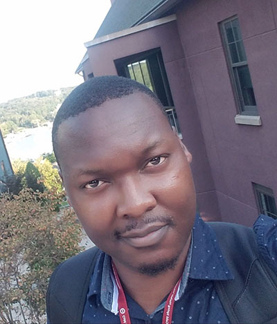
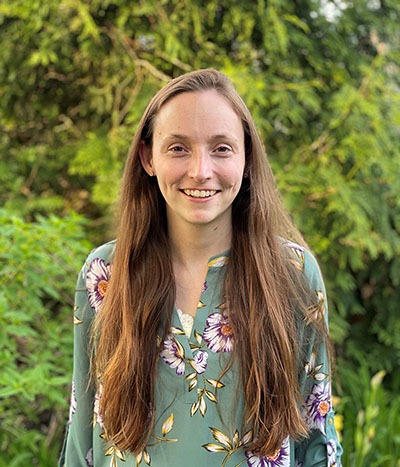

April 12, 2021
The Major lab welcomes new graduate student Julius Chembo to the lab. He will be working on Team NRF2 studying the mechanism of a novel NRF2 inhibitor. We are excited to have him!

April 3, 2021
We went to Forest park today and played some cornhole and chess!
Someone from the STL Chess Club was riding his bike by and even took a picture of Chase and Ben playing chess.
(Photo credit goes to the Chess Club)
March 26, 2021
We welcome Nathan Wamsley to the lab as the first WashU student to join! He will be working with the Goldfarb lab to help improve our mass spec projects.
February 24, 2021

The lab welcomes Emily Zarbock to the group today! She will be the manager of the mass spec and huge help with not only maintaining the machine but being a wealthy of knowledge.
February 2021
Ben and Dennis went to 4444 Forest Park Ave to see how the new Mass Spectrometry center is coming together. Estimated time for completion is thought to be June 2021. We are excited to see it put back together!

January 11, 2021
This month the lab is welcoming 3 rotation students. Excited to have you Nathan, Julius, and Molly!
December 27, 2020
Due to COVID and Visas, some of us couldn't travel for the holidays. On a warm December day after Christmas, those of us who didn't travel got together to hang out in Chase and Brittany's apartment's "Person Park". Brittany made some chili hand pies, copying Megan from the last get together. Image credit goes to Soma :)
December 6, 2020
We had a socially distanced get together to celebrate pretty much everything good that had happened in 2020. Chase ran home and got his drone to take a picture of all of us. Unfortunately it couldn't get high enough and didn't quite get Isaac, our rotation student, in the picture. Sorry Isaac!

November 21, 2020
We had our second Major-Goldfarb lab Game Night playing Among Us. We are all getting a bit better at this game!
November 20, 2020
Soma our new postdoc arrived safely to the USA today from South Korea. She will be working on Team NRF2! We are all excited for her to start her new scientific chapter with us!
November 16, 2020
The Major lab is thrilled to welcome Isaac as our new rotation student today for the next few weeks.
November 14, 2020
We had our first Major-Goldfarb lab Game Night playing Among Us. Looking forward to many more!
October 17, 2020
The lab went and played some golf today! A bit windy, but a beautiful day.
October 2, 2020

Kyle, Chase, and Brittany enjoyed a nice fall Postdoc happy hour in Forest Park playing bags/cornhole. Pictured is Chase, Kyle, and Javier, who is from the Stratman lab.
September 23, 2020
Moved the TC room and the IncuCyte today. Almost done completely with the move. Just waiting on the -90C freezers to be moved.
August 26, 2020
The Major lab is celebrating our new move with bubbly and pastries!
August 25, 2020
The Major lab mostly moved into our new shiny space today! The pictures make it look like Chase did a lot, but we all know the truth...
August 20, 2020
Ben, Dennis, and Brittany got a sneak peak of the new lab space. Here are some pictures:
July 1, 2020
The Major lab welcomes Chase Weidmann a new postdoc to the team! He is coming from UNC and wants to learn mass spectrometry from us.

January 31, 2020
The Major lab has officially closed the lab down at UNC. We had many great years there, but we are looking forward to many more at WashU!
All old news can be found clicking on this shiny button!